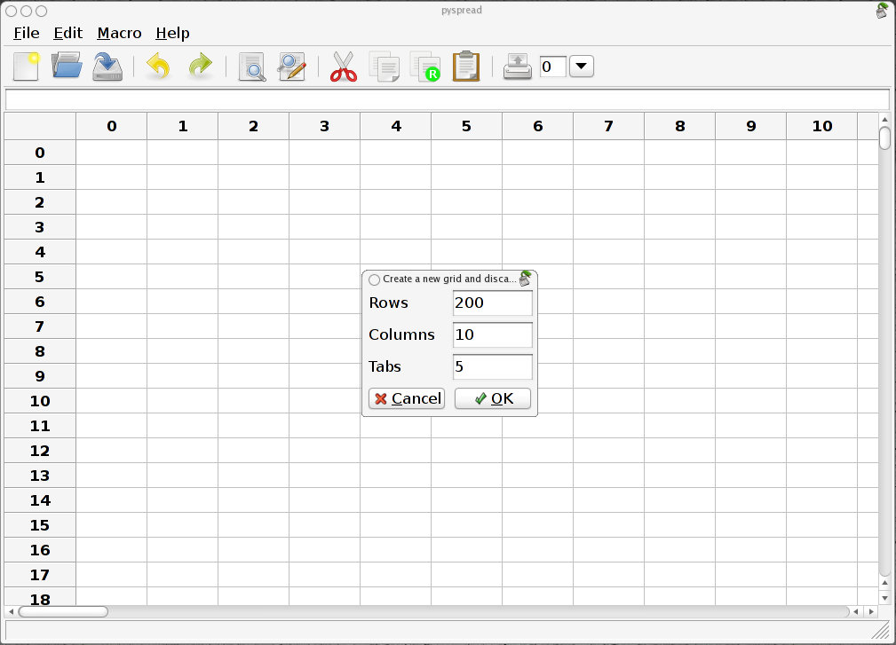

Pyspread Manual
© Martin Manns 2008
Not too long ago, I wrote a small decision support system for engineers in a spreadsheet application that we all know too well. Because the calculations should be transparent, everything was realized with the in-cell functions. It works now. However, the length and complexity of the cell commands keep the application pretty opaque.
Therefore, I looked for a spreadsheet with more powerful functions and data structures that are accessible inside each cell. Something like Python that empowers you to do things quickly. And yes, it should be free and it should run on Linux as well as on Windows. I looked around and found nothing that suited me. Therefore, I started pyspread.
Concept:
Benefits:
python setup.py install
Windows: Replace “python” with your Python interpreter (absolute path)
pyspread
Run pyspread with
$ pyspread.py
Select the Menu File → New
Enter 200 rows, 10 columns and 5 tables in the pop-up menu.

After clicking OK, you get a new table with the typed-in dimensions.
Select the top-left cell and type:
1 + 5 * 2
The spreadsheet evaluates this Python statement and displays the result:
11
In the cell that is one row below (cell (1, 0, 0)), type
S
As we see from the result, S is a known object. In fact, it is the grid object that we are currently working in.
To access a cell, we can index the grid. Replace S with
S[0, 0, 0]
and the same result as in the top-left cell that has the index (0, 0, 0) is displayed. The first parameter is the row, the second parameter is the column and the third parameter is the table.
Note that the calculations in cell (0, 0, 0) are done twice in this example, because the function that results from parsing the top-left cell is called by cell (1, 0, 0). So be careful e. g. when using one generator in multiple cells.
Now replace the expression in the top-left cell by
1
Both cells change immediately because all visible cells are updated.
The main grid S can be sliced, too.
Write into cell (3, 0, 0):
S[:2, 0, 0]
It now displays [2 2], which is a list of the results of the cells in [:2, 0, 0].
Each cell can access its own position in the grid through the magic variables X (row), Y (column) and Z (table).
Change to table 2 by selecting 2 in the iconbar combobox. Type into cell (1, 2, 2):
[X, Y, Z]
The result is [1 2 2] as expected. Now copy the cell (Crtl-C) and paste it into the next lower cell (Ctrl-V). [2 2 2] is displayed. These cell-dependent attributes achieve the relative addressing.
The spread method of the grid S provides an easy way to fill cells with conjectures.
(Note: The syntax has changed in 0.0.10)
Write into cell (0, 1, 2) and (1, 1, 2):
range(100)
S.spread(S[X – 1, Y, Z], (0, 0, 2))
When changing the focus to a new cell, the new values appear. You may delete the cell (1, 1, 2) again in order to prevent pyspread from overwriting the cells again and again.
Cells can be named by preceding the Python expression with “<name> =“. Type into cell (2, 4, 2):
a = 3 * 5
and in cell (3, 4, 2):
a ** 2
The results 15 and 225 appear. a is globally available in all cells.
External modules can be imported into pyspread. Therefore, powerful types and manipulation methods are available.
Note: The package gmpy that is not part of the Python stock installation is required for the following example (use the current version at code.google.com).
Type into cell (5, 2, 2):
gmpy = __import__(“gmpy”)
<module ‘gmpy’ etc. is displayed. Now we redefine the rational number object in cell (6, 2, 2) in order to reduce typing and type in two rationals in the next two cells:
q = gmpy.mpq
q(1, 37)
q(229, 13)
In the next cell (9, 2, 2) type:
S[X - 2, Y, Z] + S[X - 1, Y, Z]
The result is 8486/481.

Note: The package rpy that is not part of the Python stock installation is required for the following example.
Switch to table 3. Import rpy in cell (0, 0, 3):
rpy = __import__(“rpy”)
Import the math module in cell (0, 1, 3):
math = __import__(“math”)
Create the x-values for a xy plot with the arange function of the package numpy. (numpy is accessible without any import because the grid S consists basically of wrapped numpy arrays.)
Type into cell (1, 0, 3):
numpy.arange(0.0, 10.0, 0.1)
Create the y value list in cell (2, 0, 3):
[math.sin(x) for x in S[1, 0, 3]]
Now plot everything by typing into cell (3, 0, 3):
rpy.r.plot(S[1, 0, 3], S[2, 0, 3], xlab=’’, ylab=’’, type=’l’)